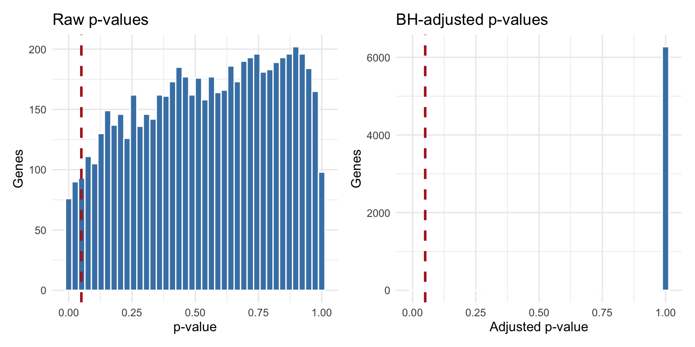

This afternoon you will apply the Day 13 morning material to the fission dataset: an RNA-sequencing experiment in fission yeast (S. pombe) comparing a wild-type strain to an atf21 deletion mutant under oxidative stress.
The experiment has two factors: strain (wild-type vs mutant) and time (0, 15, 30, 60, 120, 180 minutes after stress). Today we use only the time zero samples – three wild-type and three mutant replicates – and ask: which genes differ between the two strains at baseline?
The DESeq2 workflow is identical to what you have already done. The new material is in interpreting the multiple testing results and clustering the output.
Note
Install fission if needed: BiocManager::install("fission")
Install factoextra if needed: install.packages("factoextra")
How this lab works:
Part 1 (instructor demo, ~20 min): Load the data, subset to time zero, and run DESeq2 together.
Part 2 (on your own, ~90 min): Four exercises on multiple testing and clustering.
2 Part 1: Instructor Demo
2.1 Setup
library(tidyverse)library(this.path)library(SummarizedExperiment)library(DESeq2)library(fission)library(factoextra)library(cluster)library(pheatmap)library(patchwork)# Some conflicted functions for this .qmd, setting defaults here:select <- dplyr::selectfilter <- dplyr::filtersetdiff <- base::setdiffsetwd(this.dir())data(fission)fission
The experiment has 36 samples: 3 replicates per strain per time point, across 6 time points. For today we subset to time zero (the unstressed baseline) so the comparison is straightforward: wild-type vs. mutant with 3 replicates each.
# Subset to time = 0 onlyfission_t0 <- fission[, fission$minute =="0"]colData(fission_t0) |>as_tibble()
p1 <- res_df |>filter(!is.na(pvalue)) |>ggplot(aes(x = pvalue)) +geom_histogram(bins =40, fill ="steelblue", color ="white") +geom_vline(xintercept =0.05, color ="firebrick",linetype ="dashed", linewidth =1) +labs(title ="Raw p-values", x ="p-value", y ="Genes") +theme_minimal()p2 <- res_df |>filter(!is.na(padj)) |>ggplot(aes(x = padj)) +geom_histogram(bins =40, fill ="steelblue", color ="white") +geom_vline(xintercept =0.05, color ="firebrick",linetype ="dashed", linewidth =1) +labs(title ="BH-adjusted p-values", x ="Adjusted p-value",y ="Genes") +theme_minimal()p1 + p2

The spike near zero in the raw p-value histogram represents the true differentially expressed genes. The flat right-hand region represents the null genes. The BH procedure uses this structure to set an adaptive threshold that controls the false discovery rate.
3 Part 2: Exercises
3.1 Instructions
Step 1. Open a new Quarto document. Title it "Day 13 Lab: Multiple Testing and Clustering".
Step 2. Copy the full setup and demo chunks (through the res_df creation). You need deseq_dds, res, and res_df available before starting.
Step 3. Work through Exercises 1–4. Add 2–3 sentences of interpretation after each result.
Step 4. Render when finished.
Exercise 1 – Comparing Correction Methods.
How many genes have a raw p-value below 0.05? Below 0.01?
Compute Bonferroni-adjusted p-values using p.adjust(res_df$pvalue, method = "bonferroni"). How many genes are significant at the 0.05 level after Bonferroni correction?
How many genes have padj < 0.05 (BH correction)?
Summarize the three counts in a tibble with columns Method and N_significant. Describe in one sentence why BH finds more significant genes than Bonferroni.
Some genes have padj = NA. Count them. Then inspect their baseMean values:
What do you notice? Why does removing these genes before applying BH increase power for the genes that remain?
# your code here
Exercise 2 – Exploring the DE Results.
Among genes with padj < 0.05, how many are upregulated (log2FoldChange > 0) and how many are downregulated? In this experiment, which group does upregulated mean higher expression in – wild-type or mutant?
Print the top 10 most significant genes sorted by padj. Report gene ID, log2FoldChange, and padj.
For the most significant gene, convert the log2 fold change to a regular fold change with 2^(log2FoldChange). Interpret this in plain language.
Produce a volcano plot: log2FoldChange on the x-axis, -log10(padj) on the y-axis. Color significant genes (padj < 0.05) in red. Add dashed lines at LFC = -1, LFC = 1, and -log10(0.05). Describe what the genes in the top-right and top-left corners represent.
# your code here
Exercise 3 – Hierarchical Clustering of Samples.
Apply the variance-stabilizing transformation:
vsd <-vst(deseq_dds, blind =FALSE)
Take the 300 most variable genes and row-scale the matrix:
Cut to 2 clusters with cutree(hc, k = 2). Cross-tabulate cluster membership against strain. Do the two clusters correspond to wild-type and mutant? What does this tell you about the overall effect of the mutation on the transcriptome?
# your code here
Exercise 4 – K-Means Clustering of Genes.
Using the mat matrix from Exercise 3, use the silhouette method to help choose K:
Pick one cluster and describe its expression pattern: consistently higher in the mutant or in the wild-type? Is the pattern consistent across all three replicates within each strain?
Are some clusters better-defined than others? What might a poorly defined cluster (low average silhouette width) mean biologically?
# your code here
4 Quick Reference Card
4.1 Setup
library(tidyverse)library(SummarizedExperiment)library(DESeq2)library(fission)library(factoextra)library(cluster)library(pheatmap)data(fission)# Subset to time zerofission_t0 <- fission[, fission$minute =="0"]